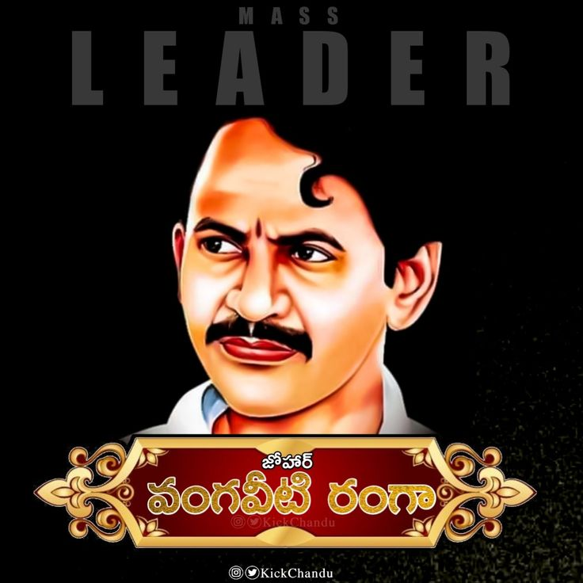

He became an MLA for the Congress party in 1985. He was known for his opposition to the then-ruling Telugu Desam Party and its leader N.T. Rama Rao, organizing a Janachaitanya Yatra.

Pawan Kalyan is a prominent actor-turned-politician serving as the Deputy Chief Minister of Andhra Pradesh since June 2024. He founded the Jana Sena Party (JSP) in 2014, emphasizing grassroots issues, before achieving a 100% strike rate in the 2024 elections, winning all 21 contested assembly seats and 2 Lok Sabha seats in alliance.

Nara Chandrababu Naidu is a veteran Indian politician and the current Chief Minister of Andhra Pradesh (as of 2024), known for his pro-technology, business-friendly policies and for serving as the longest-serving CM of the state. Beginning in 1978 with the Congress party, he later joined the TDP under his father-in-law N.T. Rama Rao, taking over as CM in 1995 after an internal party coup. He is a pivotal figure in national coalition politics (NDA), having served as CM from 1995–2004, 2014–2019, and returning to power in 2024.